Role: Illustrator and programmer
Tools: p5.js, Krita, CSS
Try it out: Catch 'n Bake
Summary of Project
Catch ‘n Bake is a catcher minigame where you play a small cat who wants to bake a cake. The aim of the game is to earn as many points as you can. To earn points, catch the ingredients that make up a cake given by the list of ingredients while avoiding the bad items and objects that shouldn't go into a cake. Bonus points are given for completing the ingredients list.


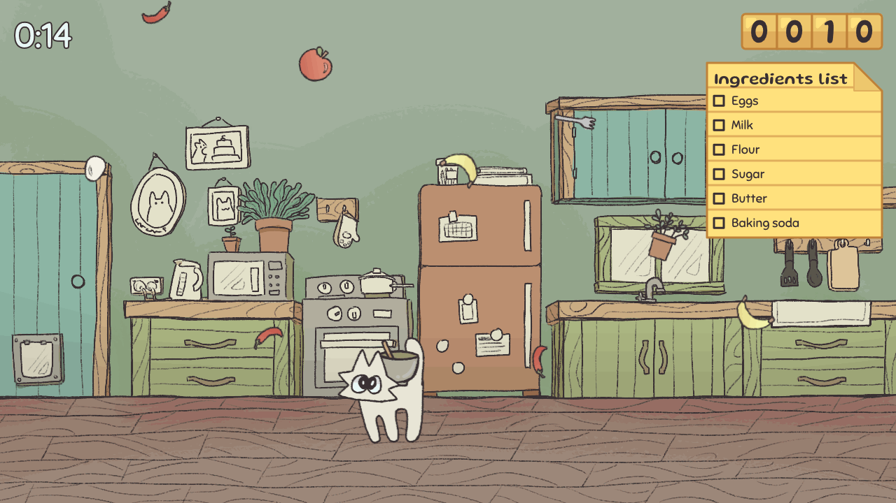


Objective
My objective for this brief was to develop an interactive creative coding sketch for an exhibition in one of three public laneways in Fortitude Valley that would interest and engage visitors to the lane. The sketch would be exhibited on one of three Creative Coding Cabinets installed in the lanes.
My role
Try it out
Controls
The controls to play this minigame are as follows:
- Move the character (left and right arrow keys / left and right joystick)
- Reset the game (key number one (1) / first button)
- Slow down the character (key number two (2) / second button)
- Speed up the character (key number three (3) / third button)


This minigame was exhibited at QUT Creative Coding Exhibition on Bakery Lane and Winn Lane in Fortitude Valley!
Process
Design and aesthetic choices
For this sketch's theme, the idea of a game where you catch ingredients to bake a cake came from the brief. As the cabinets may be located on Bakery Lane, I took inspiration from that, inserting baking-themed elements into my sketch.
In terms of the interaction and the game's controls, I chose the Louie cabinet (joystick and three buttons) for its simplicity as my sketch idea was a game with simple enough and easy-to-learn controls.
For the sketch's visual design and aesthetic, I wanted a cute stylised game with a warm and homey feel or vibe. To achieve this, I first made myself a mood board using Pinterest, as shown below.
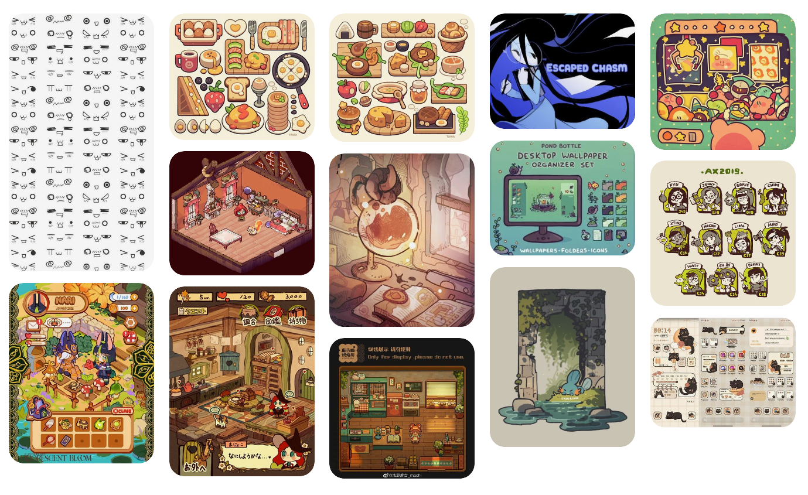
I had saved a lot of chibi-styled artworks that had that cute look to them as well as some works that used a lot of warm tones. In particular, I largely referenced the two images at the bottom, second and third from the left, taking inspiration from their texture and lineart and the colours that they used.
Approach to the design process
To start with this assignment, I first read the brief before brainstorming and noting down potential ideas that I could create, as shown below.
I then chose my idea and sketched with pen on paper some notes and additional ideas and features that I could add to it.
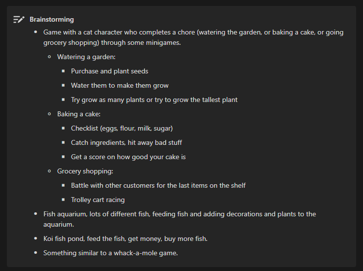
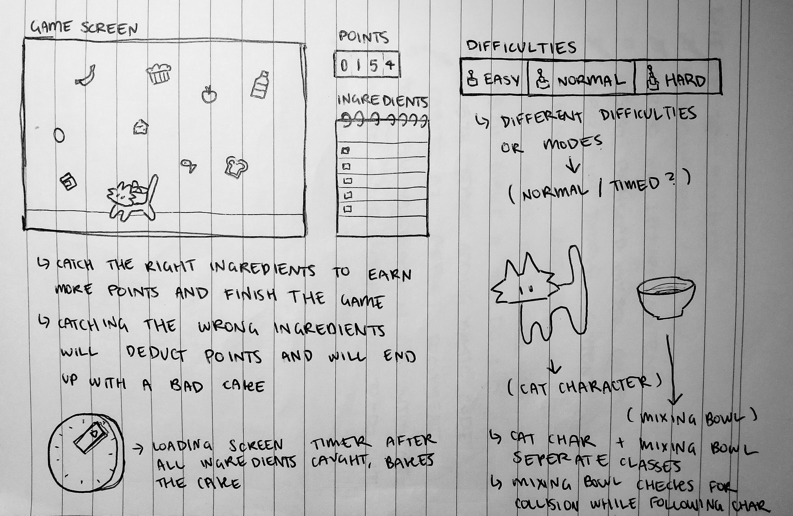
Coding in p5.js
After brainstorming and ideating, I moved on to coding. I wrote some very basic code, using object classes to create the movable character and the randomised items that fell.
I added catcher and item collision so that whenever the item would come within the bounds of the square catcher, the item would disappear and be added to the caught array.
For movement, I had first used some very basic code, but with the help of a public sketch that used velocity, acceleration and mass, I managed to create a smoother movement that started slow and sped up over time.
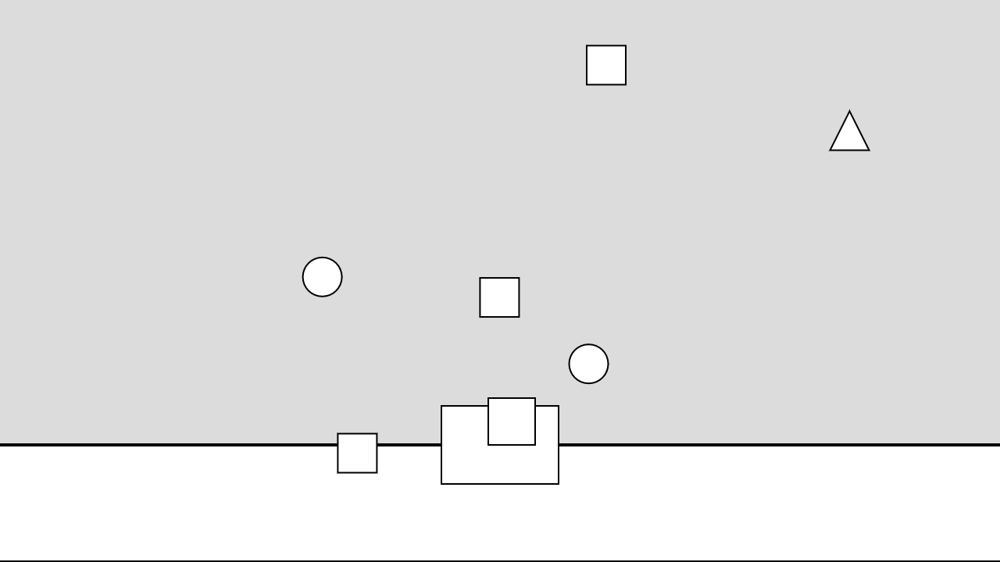
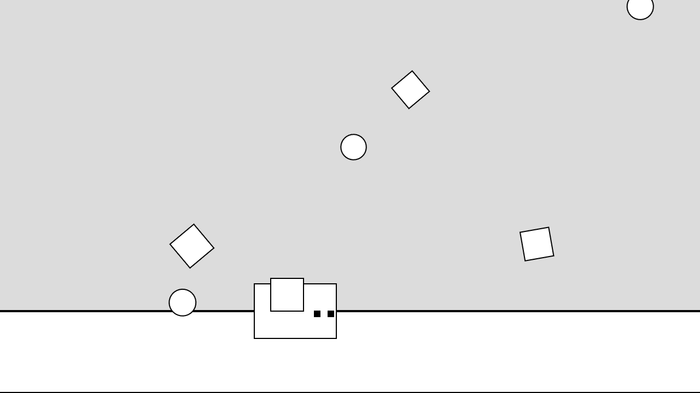
To display left and right movement better, I added a small face to the character which would then flip whenever the character moved in a different direction.
I then added a scoreboard in the top right corner which calculated the score based on the shapes of the items that had been caught in the caught array and added or subtracted points.
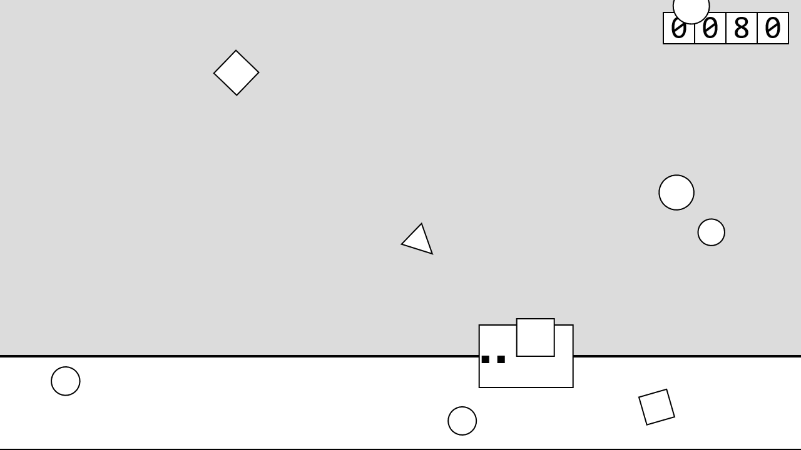
Illustrating
Once I had the basic code down and had made the mood board, I used Krita to draw the art needed for the sketch, starting with the background, which helped to set the tone of the rest of the art needed.
I added the background to the sketch and moved on to drawing the items.
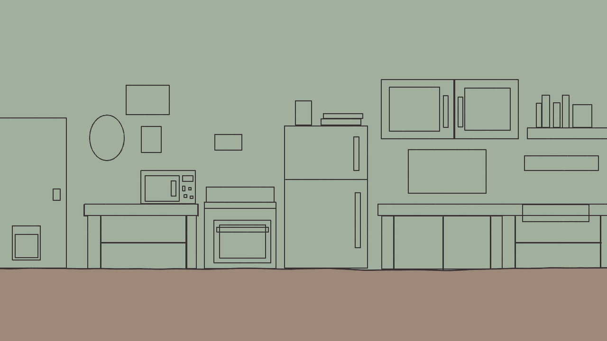
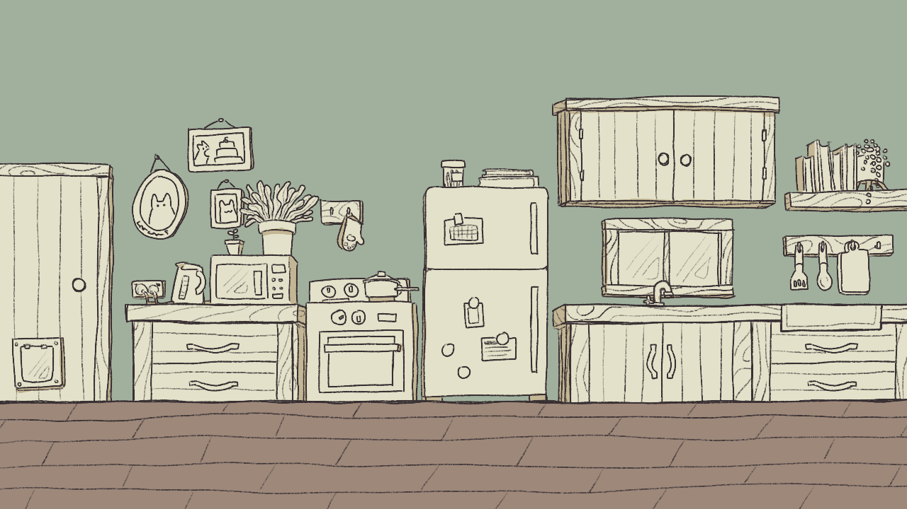
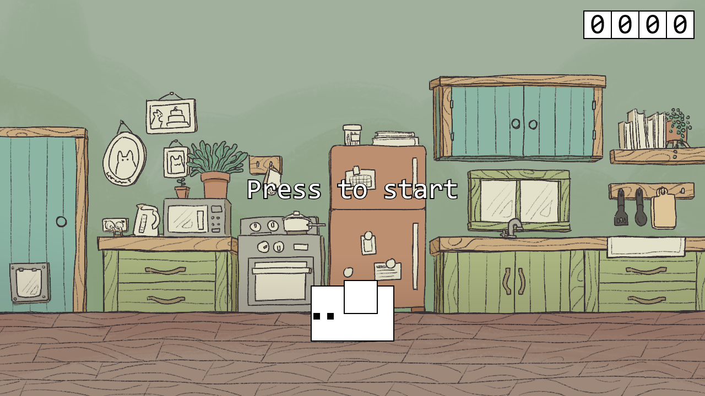
For the items, I had made a list of the types of things I wanted.
The items listed as “good” were the essential ingredients while the items listed as “okay” were meant to allow the user to be able to create different types of cakes. This feature did not end up being added due to the complexity and instead, these items give a small amount of points.
Everything listed below that deducts a certain amount of points from the score.
These item images replaced the random shapes.
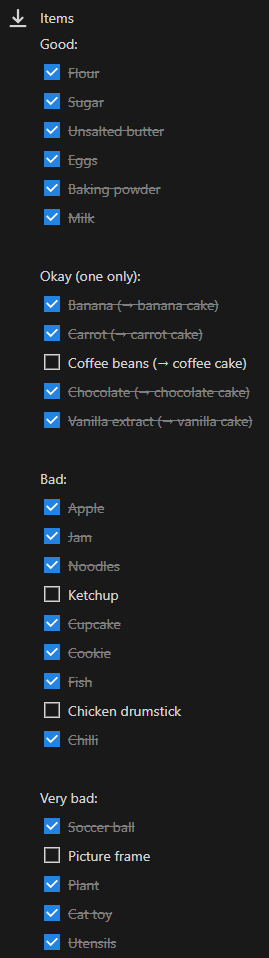
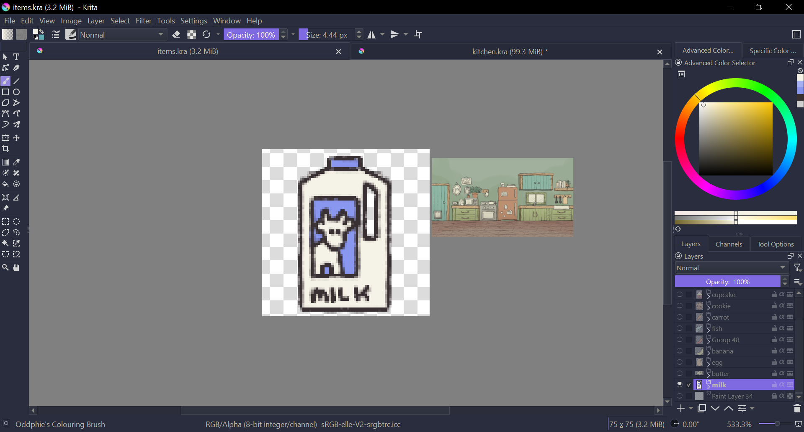
I then started drawing the sprite of the cat character, using animation tools to help draw in the running keyframes.
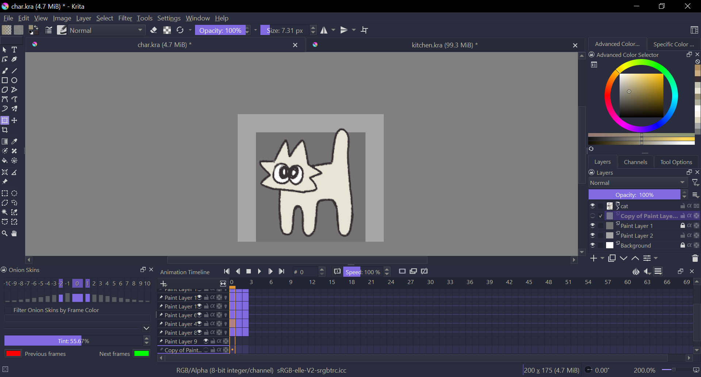
UI elements
After that, I started to stylise the UI elements, such as the scoreboard and the font, using Gluten and Sniglet taken from Google Fonts. I also added an ingredient list that would cross off ingredients once caught to help users know what they need to catch, and I added a timer in the opposite corner.
Additionally, I added text messages on the item that would appear when the user caught an item to help learn what was good and what was bad.
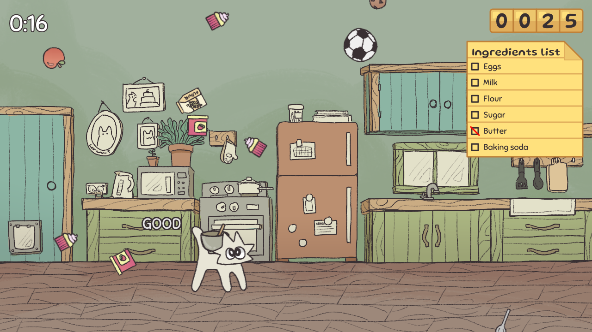
Final touches
I finally added some background music from Pixabay and a few different popping sound effects that would occur when the user caught something.
Once that was finished, I used local storage to add in a high-score system, which I figured would make the game more fun and competitive. In addition to this, I also allowed the user to earn bonus points for completing everything on the ingredients list.
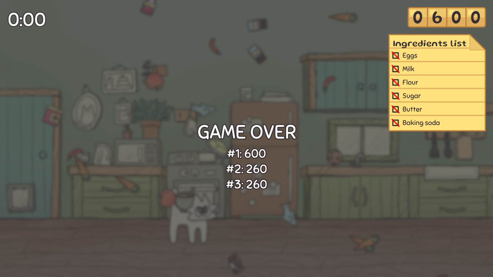
And lastly, I illustrated the thumbnail that would be used for the cabinet games list.
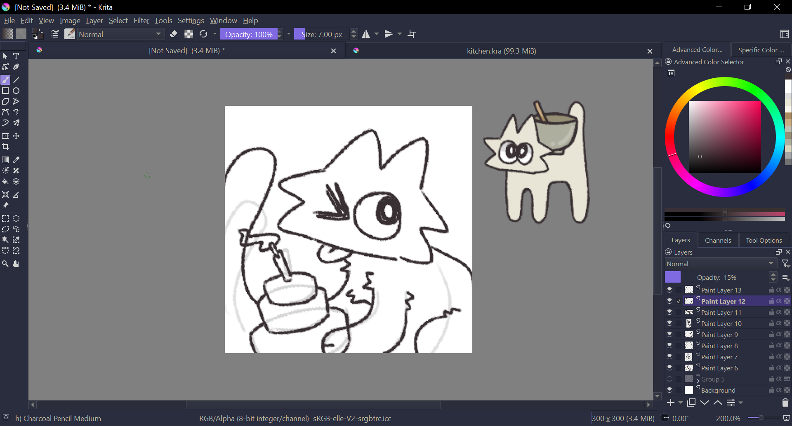